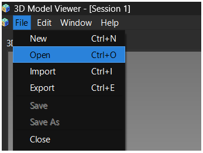
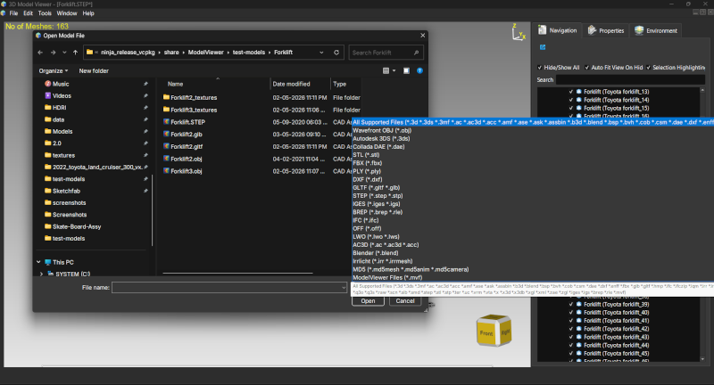
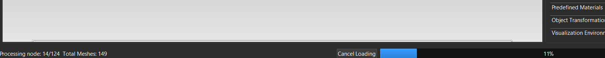
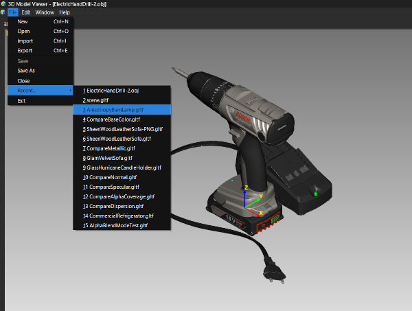
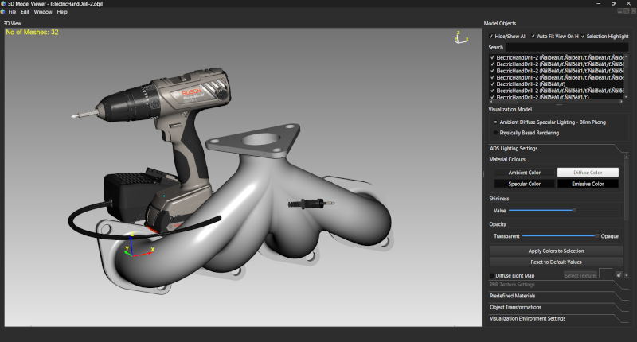

Lesson 2 of 14
Lesson 2: Opening Models
Introduction
ModelViewer supports a wide variety of 3D file formats. Let's learn how to open and import models into the application.
Supported File Formats
- Mesh Formats: OBJ, STL, PLY, glTF (.gltf, .glb), FBX, 3DS, DAE (Collada), Blender (.blend), and many more via Assimp library
- CAD Formats: STEP (.stp, .step), IGES (.igs, .iges), BREP (.brep) via OpenCASCADE library
- Native Format: MVF (.mvf) - ModelViewer's own format for saving complete scenes
Method 1: Using the Menu
The standard way to open files:
Step 1: Click File → Open
Navigate to the File menu in the menu bar and click Open, or press Ctrl+O

File menu showing Open option highlightedStep 2: Select Your File
A file dialog will appear. Navigate to your 3D model file and select it.

File open dialog showing various 3D file formatsStep 3: Wait for Loading
The model will load with a progress bar showing the status. For large files, this may take a moment.

Progress bar showing model loading
You can cancel the loading process by clicking the 'Cancel Loading' button in the status bar.
Method 2: Drag and Drop
The fastest way to open files:
Step 1: Locate Your File
Find the 3D model file in your file explorer (Windows Explorer, Finder, Nautilus, etc.)
Step 2: Drag to Window
Simply drag the file and drop it anywhere in the ModelViewer window.
 Demonstrating drag and drop of a 3D file onto the ModelViewer window
Demonstrating drag and drop of a 3D file onto the ModelViewer window
You can drag and drop multiple files at once. Each will open in a new session.
Method 3: Recent Files
Quickly reopen files you've worked with recently:
Step 1: Access Recent Menu
Go to File → Recent... to see a list of recently opened files.
Step 2: Select File
Click on any file in the list to open it immediately.

Recent files menu showing list of previously opened modelsImporting Additional Models
You can add models to an existing scene:
Step 1: Use File → Import
Click File → Import or press Ctrl+Shift+I
Step 2: Select Models
Choose one or more files to add to your current scene.
Step 3: Models Are Combined
The new models will be added to your object list and appear in the viewport.

Viewport showing multiple imported models with object list displaying all items
Use Import when you want to work with multiple models in the same scene. Use Open when you want to start fresh with a new model.
Progressive Loading
For large files, ModelViewer uses progressive loading:
- Objects appear as they are loaded
- You can interact with objects that have already loaded
- The progress bar shows overall completion
- You can cancel at any time
After opening a file, the viewport automatically frames the model using 'Fit All' so you can see it completely. Press F at any time to fit all objects in view.